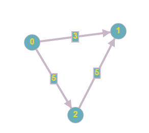
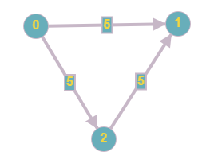
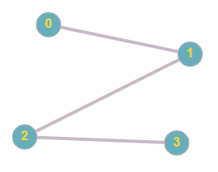
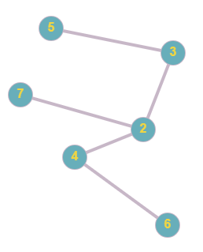
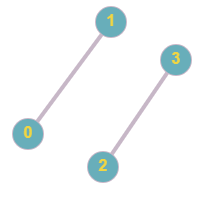

В математической теории графов и информатике граф —
это совокупность
непустого множества вершин и множества пар вершин (связей между
вершинами)

Ориентированный граф (кратко орграф) — (мульти) граф, рёбрам
которого присвоено направление. Направленные рёбра именуются также
дугами, а в некоторых источниках (Оре) и просто рёбрами.

Неориентированным графом называется множество как угодно размещенных на
плоскости, точек, некоторые из которых соединены линиями любой формы.

Связный граф — граф, содержащий ровно одну компоненту
связности. Это означает, что между любой парой вершин этого графа
существует как минимум один путь. В противном случае граф
будет называться несвязным.
связный: несвязный:
;